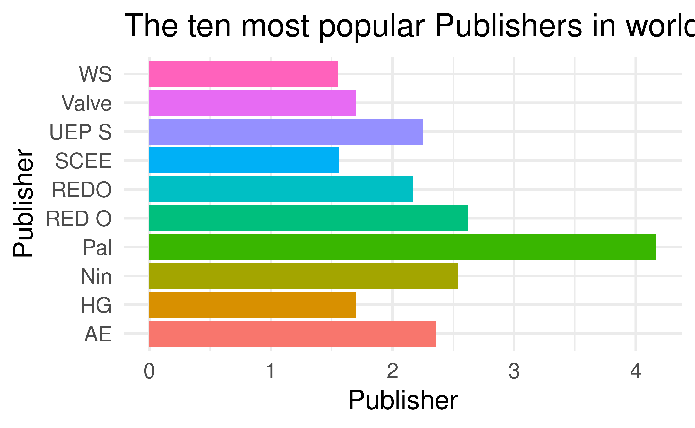

The factors affecting sales of video games
From 1980 to 2020
Disco
Adam, Aishee, Haoran, Karl
University of Edinburgh
2021-11-26
A statement of our overall goal:
We will look at the different relationships between the sales (global and region specific) of a game and different factors in its release and success.
The different factors we look at include genre, platform of release, user and critic score.
We will look at the correlation between each of these factors and decide on the most influential characteristic in the sales of a game.
The correlation between genre and sales:
A line graph showing the trend between genre of game and total global sales over the years
The correlation between genre and sales:
- This plot clearly shows that, from the top 5 best selling genres of the data, sports and action games have the biggest peaks (approximately 135 million global sales).
- But, these recently successful genres haven’t always been the best selling: while not at the top spots in the last 15 years, platform games have consistently totaled a lot of global sales (for the entirety of the period between 1984 and 1995, it was by far the best selling genre). Recently, the genre is relatively less successful.
The correlation between genre and sales:
Overall, genre does have an impact on the total sales of a game, but which genre this is changes over time - currently, now sports games are clearly the best selling games.

The correlation between publisher and sales:
A bar graph showing the number of best selling games released by each publisher

The correlation between publisher and sales:
It is clear to see that Nintendo is overwhelming the publisher with the most best selling games (games in the top 50) with almost half of the list taken up by them. This shows that genre does influence the success of games. This is probably because Nintendo make high quality, nostalgic and playable games.
Data 3 - Karl
Data 7 - Karl
Data 4 - Aishee
Data 5 - Aishee
Data 2 - Haoran

Brief Explaination
- The graph shows the mean sales of different region against platforms.
- From the plot, we can see that, overall, north america contributes the most to the global sales of video games across most platforms, excluding the PS4 and PC.
Explaination
From the plot, we can see that, overall, north america contributes the most to the global sales of video games across most platforms; excluding the PS4 and PC (for which the highest mean sales is Europe), North America is the biggest seller of video games across platforms. This will be due to a mix of large population and a high percentage of said population with access to these consoles. The opposite can be said about the lower end: Japan and ‘Other’ regions are on the lower end of mean sales for all platforms: they, in this context, have lower populations and lower percentage of said populations with access to these consoles and therefore it makes sense that they do not contribute as highly to the total global sales of video games across all platforms.
Conclusion - Haoran
Extra if you need
*You can also add footnotes
Code
## # A tibble: 2 × 5
## term estimate std.error statistic p.value
## <chr> <dbl> <dbl> <dbl> <dbl>
## 1 (Intercept) -17.6 6.76 -2.60 1.23e- 2
## 2 speed 3.93 0.416 9.46 1.49e-12## # A tibble: 1 × 12
## r.squared adj.r.squared sigma statistic p.value df logLik AIC BIC
## <dbl> <dbl> <dbl> <dbl> <dbl> <dbl> <dbl> <dbl> <dbl>
## 1 0.651 0.644 15.4 89.6 1.49e-12 1 -207. 419. 425.
## # … with 3 more variables: deviance <dbl>, df.residual <int>, nobs <int>Plots

Plot and text
- Some text
- goes here

Different widths
- Some text
- goes here

Tables
If you want to generate a table, make sure it is in the HTML format (instead of Markdown or other formats), e.g.,
| Sepal.Length | Sepal.Width | Petal.Length | Petal.Width | Species |
|---|---|---|---|---|
| 5.1 | 3.5 | 1.4 | 0.2 | setosa |
| 4.9 | 3.0 | 1.4 | 0.2 | setosa |
| 4.7 | 3.2 | 1.3 | 0.2 | setosa |
| 4.6 | 3.1 | 1.5 | 0.2 | setosa |
| 5.0 | 3.6 | 1.4 | 0.2 | setosa |
| 5.4 | 3.9 | 1.7 | 0.4 | setosa |